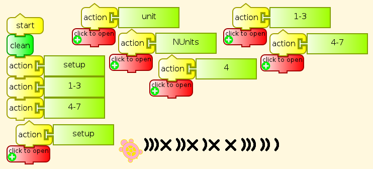
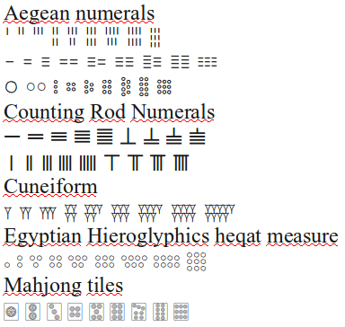
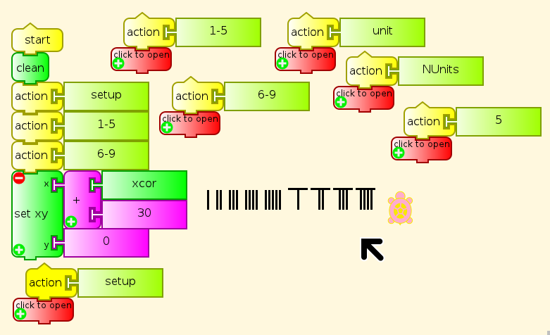
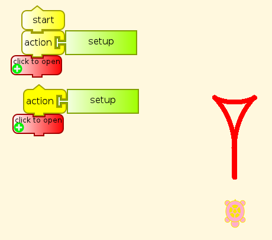
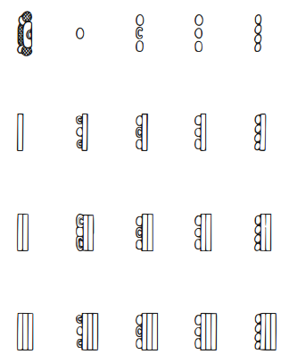
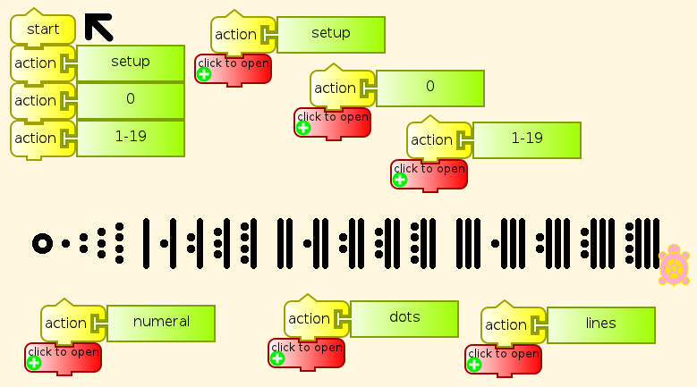
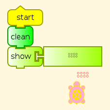

Numerals¶
There are several historical examples of systems for writing numbers with numerals that show 1-9 copies of a basic visual unit, which can be a line, a circle, a wedge-shaped cuneiform indentation, or other shapes. Some of them add in an element representing four or five single units. An advantage of any of these systems for us to consider is that pre-literate preschoolers can deal with them by counting before they have memorized the conventional digits. This makes arithmetic particularly easy to demonstrate.
Origins of numerals¶
The numerals used in various languages, living and extinct, show their origins in stroke marks or scores (cuts), like the Chinese 一二三, and the earliest forms of Hindu-Arabic-European numerals. The following are Kharosthi numerals, among the earliest numeral forms known from India. Kharosthi was written from right to left, like the source for its writing, Aramaic, and the source for all alphabetic writing, Phoenician. First we have an image, so that you don’t need a Kharosthi font to view it, followed by the numerals for 1–4 in Unicode text.
𐩀 𐩁 𐩂 𐩃
The first three of these are very similar to our modern numerals, except that the 2 and 3 have been turned sideways during their migrations. The numeral for 4 has been given a smaller turn, and a stroke added.
Kharosthi numerals exist for 5–9, but these are not of the visual type. It was also possible to write numbers in Kharosthi in something like the manner of Roman numerals, so that 2 would be 𐩀𐩀. However, Kharosthi uses a numeral for 4 rather than 5 as in Roman numerals, indicating a custom of counting on four fingers but not the thumb. The Kharosthi numeral for 4 is very similar to X, so 7 in Kharosthi can be approximated in ASCII (right-to-left, again) )))X.
Naturally, we can teach a Turtle how to write this second form of Kharosthi numerals.

The details of this program are on another page.
The font for Kharosthi in Ubuntu Linux is in the package ttf-mph-2b-damase, with the name damase.ttf. Package names in other distributions may vary.
Visual numerals in Unicode¶
Here are many of the visual numerals that have made it into Unicode as characters, appearing first as an image, so that you can see them even if you do not have all of the fonts needed to display them. Then I have provided them as text so that you can test which fonts you lack.

UnicodeNumerals.png¶
Counting Rod Numerals
Cuneiform
𒐕𒐖𒐗𒐘𒐙𒐚𒐛𒐜𒐝
Egyptian Hieroglyphics Heqat Measure
𓃉 𓃊 𓃋 𓃌 𓃍 𓃎 𓃏 𓃐 𓃑
Mahjong Tiles
🀙 🀚 🀛 🀜 🀝 🀞 🀟 🀠 🀡
Dice are also visual, but go up only to six, with no 0.
⚀ ⚁ ⚂ ⚃ ⚄ ⚅
Partitioning by fours and fives¶
Counting Rod Numerals show clear indications of counting on fingers up to five, then with a whole hand for five plus fingers of the second hand, as in Roman numerals.
I II III IIII V VI VII VIII VIIII
with the later abbreviations IV for IIII, and IX for VIIII.
Counting Rod Numerals and Roman numerals are of the same structure as the Chinese and Japanese abacuses (abaci?) and the Roman counting board with its little pebbles (Latin, calculus/calculi, whence calculation and Differential and Integral Calculus).
Teaching the Turtle Visual Numerals¶
Here are the second form of Counting Rod Numerals drawn by a Turtle.

The details of this program are on another page.
I leave the others as a programming challenge. You need to determine how to draw the elements, and how to specify the layout of elements in each numeral. For example, a program for the cuneiform wedge could go like this.

The details of this program are on another page.
Mayan base 20 numerals¶
Mayan is also a candidate, notable because it is the only one of these visual numeral systems with a numeral for zero, but Mayan has not yet been added to Unicode. Mayan numerals go from 0 to 19. This is often interpreted as counting on fingers and toes, with groupings of five for hands and feet, although we have no other evidence for how they began. The following is a schematic rendering of the Mayan numerals.
The actual numerals carved in stone are sideways from these, and somewhat more elaborate.There are several variations on the shell glyph for 0, and for its surroundings.

We can teach the Turtle to write numbers in Mayan style in base 20. I am using an empty circle for 0 with these simplified forms rather than the actual Mayan shell glyph. Feel free to program a shell glyph, if you like, and add it here.

As usual, the program details appear on another page.
Visual Numerals in Turtle Art¶
It should be obvious that we can have a Turtle write out arithmetic examples by drawing these numerals. Or we can tell the Turtle to display these characters directly as text.

We can also put these numerals on Turtle Art boxes. In the following illustration, each Hieroglyphic heqat measure numeral is used as a variable name with the number it represents assigned as its value. As a curiosity, the box with a blank name contains the value 0. It works fine in arithmetic.

Another less trivial arithmetic example using variables with heqat numeral names.

Unicode character ranges for visual numerals¶
The original Unicode code space ran from U+0000 to U+FFFF, a space of 65,636 code points. Since then 16 more spaces of that size have been added, for a total of more than a million code points. Several writing systems for dead languages have been put into this extra space, and so have five-digit Unicode hex code point numbers.
Aegean Numerals
Units U+10107–U+1010F
Tens U+10110–U+10118
Hundreds U+10119–U+10121
Thousands U+10122–U+1012A
Tens of thousands (myriad) U+1012B–U+10133
Counting Rod Numerals U+1D360–U+1D368; U+1D369–U+1D371
Cuneiform U+12415–U+1241D
Egyptian Hieroglyphics heqat measure U+130C9–U+130D1. Other hieroglyphic numerals U+13386–U+1338E; U+131BC–U+131C4
Mahjong Tiles U+1F019–U+1F021
Dice U+2680–U+2685
Fonts for Visual Numerals¶
The fonts listed here are available in Ubuntu Linux. Other distributions may vary. There may be other fonts for these ranges for Windows or Mac OS, either commercially or as freeware.
Aegean
ttf-ancient-scripts/Aegean.otf
ttf-mph-2b-damase/damase.ttf
Counting Rod
ttf-ancient-scripts/Symbola.otf
Cuneiform
ttf-ancient-scripts/Akkadian.otf
Egyptian Hieroglyphic
ttf-ancient-scripts/Aegyptus.otf Private Use Area
Mahjong Tiles
ttf-ancient-scripts/Symbola.otf
Dice (Miscellaneous Symbols)
ttf-ancient-scripts/Symbola.otf